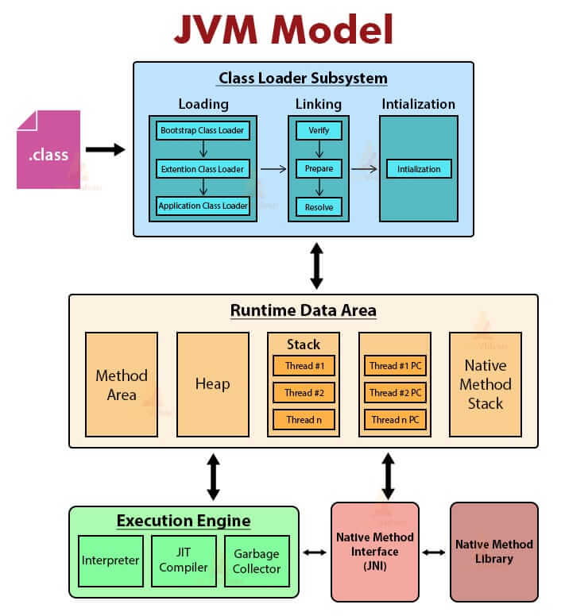
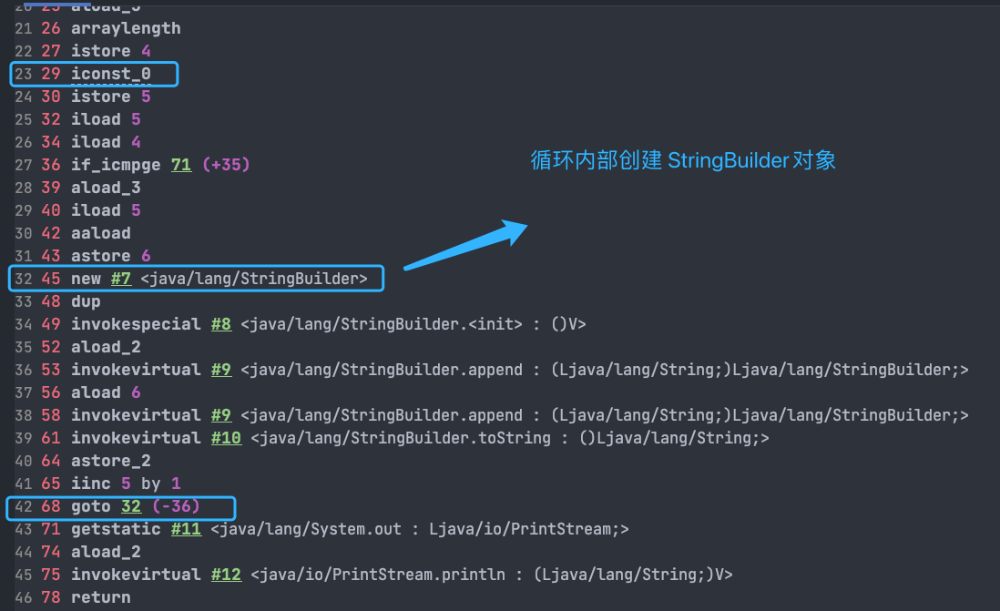
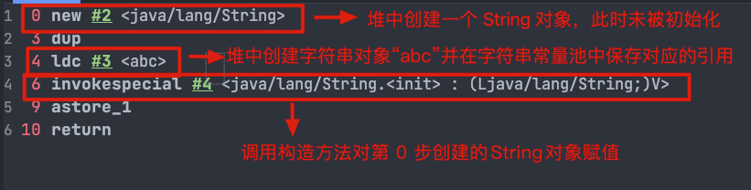

基础概念和常识
JVM
JVM是运行 Java 字节码的虚拟机。JVM 有针对不同系统的特定实现（Windows，Linux，macOS），目的是使用相同的字节码，它们都会给出相同的结果。字节码和不同系统的 JVM 实现是 Java 语言“一次编译，随处可以运行”的关键所在。
JVM 并不是只有一种！只要满足 JVM 规范，每个公司、组织或者个人都可以开发自己的专属 JVM。 也就是说我们平时接触到的 HotSpot VM 仅仅是是 JVM 规范的一种实现而已。
可以在 Java SE Specifications 上找到各个版本的 JDK 对应的 JVM 规范。
JDK、JRE
JDK（Java Development Kit），它是功能齐全的 Java SDK，是提供给开发者使用的，能够创建和编译 Java 程序。他包含了 JRE，同时还包含了编译 java 源码的编译器 javac 以及一些其他工具比如 javadoc（文档注释工具）、jdb（调试器）、jconsole（基于 JMX 的可视化监控⼯具）、javap（反编译工具）等等。
JRE（Java Runtime Environment） 是 Java 运行时环境。它是运行已编译 Java 程序所需的所有内容的集合，主要包括 Java 虚拟机（JVM）、Java 基础类库（Class Library）。
也就是说，JRE 是 Java 运行时环境，仅包含 Java 应用程序的运行时环境和必要的类库。而 JDK 则包含了 JRE，同时还包括了 javac、javadoc、jdb、jconsole、javap 等工具，可以用于 Java 应用程序的开发和调试。如果需要进行 Java 编程工作，比如编写和编译 Java 程序、使用 Java API 文档等，就需要安装 JDK。而对于某些需要使用 Java 特性的应用程序，如 JSP 转换为 Java Servlet、使用反射等，也需要 JDK 来编译和运行 Java 代码。因此，即使不打算进行 Java 应用程序的开发工作，也有可能需要安装 JDK。
字节码
在 Java 中，JVM 可以理解的代码就叫做字节码（即扩展名为 .class 的文件），它不面向任何特定的处理器，只面向虚拟机。Java 语言通过字节码的方式，在一定程度上解决了传统解释型语言执行效率低的问题，同时又保留了解释型语言可移植的特点。所以， Java 程序运行时相对来说还是高效的（不过，和 C++，Rust，Go 等语言还是有一定差距的），而且，由于字节码并不针对一种特定的机器，因此，Java 程序无须重新编译便可在多种不同操作系统的计算机上运行。
Java 程序从源代码到运行的过程如下所示：
.java文件->javac编译->.class文件->解释器&JIT->机器可理解的代码
我们需要格外注意的是 .class->机器码 这一步。在这一步 JVM 类加载器首先加载字节码文件，然后通过解释器逐行解释执行，这种方式的执行速度会相对比较慢。而且，有些方法和代码块是经常需要被调用的(也就是所谓的热点代码)，所以后面引进了 JIT（just-in-time compilation） 编译器，而 JIT 属于运行时编译。当 JIT 编译器完成第一次编译后，其会将字节码对应的机器码保存下来，下次可以直接使用。而我们知道，机器码的运行效率肯定是高于 Java 解释器的。这也解释了我们为什么经常会说 Java 是编译与解释共存的语言 。
HotSpot 采用了惰性评估(Lazy Evaluation)的做法，根据二八定律，消耗大部分系统资源的只有那一小部分的代码（热点代码），而这也就是 JIT 所需要编译的部分。JVM 会根据代码每次被执行的情况收集信息并相应地做出一些优化，因此执行的次数越多，它的速度就越快。JDK 9 引入了一种新的编译模式 AOT(Ahead of Time Compilation)，它是直接将字节码编译成机器码，这样就避免了 JIT 预热等各方面的开销。JDK 支持分层编译和 AOT 协作使用。
下面是JVM 的大致结构模型：

为什么说 Java 语言“编译与解释并存”？
我们可以将高级编程语言按照程序的执行方式分为两种：
- 编译型：编译型语言 会通过编译器将源代码一次性翻译成可被该平台执行的机器码。一般情况下，编译语言的执行速度比较快，开发效率比较低。常见的编译性语言有 C、C++、Go、Rust 等等。
- 解释型：解释型语言会通过解释器一句一句的将代码解释（interpret）为机器代码后再执行。解释型语言开发效率比较快，执行速度比较慢。常见的解释性语言有 Python、JavaScript、PHP 等等。
根据维基百科介绍：
为了改善编译语言的效率而发展出的即时编译技术，已经缩小了这两种语言间的差距。这种技术混合了编译语言与解释型语言的优点，它像编译语言一样，先把程序源代码编译成字节码。到执行期时，再将字节码直译，之后执行。Java与LLVM是这种技术的代表产物。
相关阅读：Java 即时编译器原理解析及实践
continue、break 和 return 的区别
continue：指跳出当前的这一次循环，继续下一次循环。break：指跳出整个循环体，继续执行循环下面的语句return用于跳出所在方法，结束该方法的运行
基本数据类型
Java 中有 8 种基本数据类型，分别为：
- 6 种数字类型：
- 4 种整数型：
byte、short、int、long - 2 种浮点型：
float、double
- 4 种整数型：
- 1 种字符类型：
char - 1 种布尔型：
boolean
这 8 种基本数据类型的默认值以及所占空间的大小如下：
| 基本类型 | 位数 | 字节 | 默认值 | 取值范围 |
|---|---|---|---|---|
byte |
8 | 1 | 0 | -128 ~ 127 |
short |
16 | 2 | 0 | -32768 ~ 32767 |
int |
32 | 4 | 0 | -2147483648 ~ 2147483647 |
long |
64 | 8 | 0L | -9223372036854775808 ~ 9223372036854775807 |
char |
16 | 2 | ‘u0000’ | 0 ~ 65535 |
float |
32 | 4 | 0f | 1.4E-45 ~ 3.4028235E38 |
double |
64 | 8 | 0d | 4.9E-324 ~ 1.7976931348623157E308 |
boolean |
1 | false | true、false |
对于 boolean，官方文档未明确定义，它依赖于 JVM 厂商的具体实现。逻辑上理解是占用 1 位，但是实际中会考虑计算机高效存储因素。
另外，Java 的每种基本类型所占存储空间的大小不会像其他大多数语言那样随机器硬件架构的变化而变化。这种所占存储空间大小的不变性是 Java 程序比用其他大多数语言编写的程序更具可移植性的原因之一（《Java 编程思想》2.2 节有提到）。
注意：
- Java 里使用
long类型的数据一定要在数值后面加上 L，否则将作为整型解析。 char a = 'h'char :单引号，String a = "hello":双引号。
这八种基本类型都有对应的包装类分别为：Byte、Short、Integer、Long、Float、Double、Character、Boolean 。
基本类型和包装类型的区别
用途：除了定义一些常量和局部变量之外，我们在其他地方比如方法参数、对象属性中很少会使用基本类型来定义变量。并且，包装类型可用于泛型，而基本类型不可以。
存储方式：基本数据类型的局部变量存放在 Java 虚拟机栈中的局部变量表中，基本数据类型的成员变量（未被 static 修饰 ）存放在 Java 虚拟机的堆中。包装类型属于对象类型，我们知道几乎所有对象实例都存在于堆中。
占用空间：相比于包装类型（对象类型）， 基本数据类型占用的空间往往非常小。
默认值：成员变量包装类型不赋值就是 null ，而基本类型有默认值且不是 null。
比较方式：对于基本数据类型来说，== 比较的是值。对于包装数据类型来说，== 比较的是对象的内存地址。所有整型包装类对象之间值的比较，全部使用 equals() 方法。
包装类型的缓存机制
Java 基本数据类型的包装类型的大部分都用到了缓存机制来提升性能。
注意：缓存机制只适用于自动装箱，使用构造函数创建对象不适用。
Byte,Short,Integer,Long 这 4 种包装类默认创建了数值 [-128，127] 的相应类型的缓存数据，Character 创建了数值在 [0,127] 范围的缓存数据，Boolean 直接返回 True or False。
如果超出对应范围仍然会去创建新的对象，缓存的范围区间的大小只是在性能和资源之间的权衡。两种浮点数类型的包装类 Float,Double 并没有实现缓存机制。注意看如下示例的返回结果：
|
|
自动装箱和拆箱
- 自动装箱：将基本类型用它们对应的引用类型包装起来；
- 自动拆箱：将包装类型转换为基本数据类型；
从字节码中，我们发现装箱其实就是调用了 包装类的valueOf()方法，拆箱其实就是调用了 xxxValue()方法。
因此，
Integer i = 10等价于Integer i = Integer.valueOf(10)int n = i等价于int n = i.intValue();
注意：如果频繁拆装箱的话，也会严重影响系统的性能。我们应该尽量避免不必要的拆装箱操作。
|
|
为什么浮点数运算的时候会丢失精度
|
|
这个和计算机保存浮点数的机制有很大关系。我们知道计算机是二进制的，而且计算机在表示一个数字时，宽度是有限的，无限循环的小数存储在计算机时，只能被截断，所以就会导致小数精度发生损失的情况。这也就是解释了为什么浮点数没有办法用二进制精确表示。
所以为了避免浮点数运算精度丢失的问题，需要浮点数精确运算结果的业务场景（比如涉及到钱的场景），建议使用BigDecimal。
成员变量和局部变量的区别
语法形式：从语法形式上看，成员变量是属于类的，而局部变量是在代码块或方法中定义的变量或是方法的参数；成员变量可以被 public,private,static 等修饰符所修饰，而局部变量不能被访问控制修饰符及 static 所修饰；但是，成员变量和局部变量都能被 final 所修饰。
存储方式：从变量在内存中的存储方式来看，如果成员变量是使用 static 修饰的，那么这个成员变量是属于类的，如果没有使用 static 修饰，这个成员变量是属于实例的。而对象存在于堆内存，局部变量则存在于栈内存。
生存时间：从变量在内存中的生存时间上看，成员变量是对象的一部分，它随着对象的创建而存在，而局部变量随着方法的调用而自动生成，随着方法的调用结束而消亡。
默认值：从变量是否有默认值来看，成员变量如果没有被赋初始值，则会自动以类型的默认值而赋值（一种情况例外:被 final 修饰的成员变量也必须显式地赋值），而局部变量则不会自动赋值。
成员变量与局部变量代码示例：
|
|
静态变量的作用
静态变量也就是被 static 关键字修饰的变量。它可以被类的所有实例共享，无论一个类创建了多少个对象，它们都共享同一份静态变量。也就是说，静态变量只会被分配一次内存，即使创建多个对象，这样可以节省内存。
静态变量是通过类名来访问的，例如StaticVariableExample.staticVar（如果被 private关键字修饰就无法这样访问了）。
|
|
通常情况下，静态变量会被 final 关键字修饰成为常量。
|
|
字符型常量和字符串常量
- 形式 : 字符常量是单引号引起的一个字符，字符串常量是双引号引起的 0 个或若干个字符。
- 含义 : 字符常量相当于一个整型值( ASCII 值),可以参加表达式运算; 字符串常量代表一个地址值(该字符串在内存中存放位置)。
- 占内存大小：字符常量只占 2 个字节; 字符串常量占若干个字节。
⚠️ 注意 char 在 Java 中占两个字节。
字符型常量和字符串常量代码示例：
|
|
输出：
|
|
静态方法为什么不能调用非静态成员
这个需要结合 JVM 的相关知识，主要原因如下：
- 静态方法是属于类的，在类加载的时候就会分配内存，可以通过类名直接访问。而非静态成员属于实例对象，只有在对象实例化之后才存在，需要通过类的实例对象去访问。
- 在类的非静态成员不存在的时候静态方法就已经存在了，此时调用在内存中还不存在的非静态成员，属于非法操作。
|
|
静态方法和实例方法的区别
1、调用方式
在外部调用静态方法时，可以使用 类名.方法名 的方式，也可以使用 对象.方法名 的方式，而实例方法只有后面这种方式。也就是说，调用静态方法无需创建对象 。
不过，需要注意的是一般不建议使用 对象.方法名 的方式来调用静态方法。这种方式非常容易造成混淆，静态方法不属于类的某个对象而是属于这个类。
因此，一般建议使用 类名.方法名 的方式来调用静态方法。
|
|
2、访问类成员是否存在限制
静态方法在访问本类的成员时，只允许访问静态成员（即静态成员变量和静态方法），不允许访问实例成员（即实例成员变量和实例方法），而实例方法不存在这个限制。
重载和重写的区别
重载就是同样的一个方法能够根据输入数据的不同，做出不同的处理
重写就是当子类继承自父类的相同方法，输入数据一样，但要做出有别于父类的响应时，你就要覆盖父类方法
重载：
发生在同一个类中（或者父类和子类之间），方法名必须相同，参数类型不同、个数不同、顺序不同，方法返回值和访问修饰符可以不同。
《Java 核心技术》这本书是这样介绍重载的：
如果多个方法(比如
StringBuilder的构造方法)有相同的名字、不同的参数， 便产生了重载。
1 2StringBuilder sb = new StringBuilder(); StringBuilder sb2 = new StringBuilder("HelloWorld");编译器必须挑选出具体执行哪个方法，它通过用各个方法给出的参数类型与特定方法调用所使用的值类型进行匹配来挑选出相应的方法。 如果编译器找不到匹配的参数， 就会产生编译时错误， 因为根本不存在匹配， 或者没有一个比其他的更好(这个过程被称为重载解析(overloading resolution))。
Java 允许重载任何方法， 而不只是构造器方法。
综上：重载就是同一个类中多个同名方法根据不同的传参来执行不同的逻辑处理。
重写：
重写发生在运行期，是子类对父类的允许访问的方法的实现过程进行重新编写。
- 方法名、参数列表必须相同，子类方法返回值类型应比父类方法返回值类型更小或相等，抛出的异常范围小于等于父类，访问修饰符范围大于等于父类。
- 如果父类方法访问修饰符为
private/final/static则子类就不能重写该方法，但是被static修饰的方法能够被再次声明。 - 构造方法无法被重写
总结：
综上：重写就是子类对父类方法的重新改造，外部样子不能改变，内部逻辑可以改变。
| 区别点 | 重载方法 | 重写方法 |
|---|---|---|
| 发生范围 | 同一个类 | 子类 |
| 参数列表 | 必须修改 | 一定不能修改 |
| 返回类型 | 可修改 | 子类方法返回值类型应比父类方法返回值类型更小或相等 |
| 异常 | 可修改 | 子类方法声明抛出的异常类应比父类方法声明抛出的异常类更小或相等； |
| 访问修饰符 | 可修改 | 一定不能做更严格的限制（可以降低限制） |
| 发生阶段 | 编译期 | 运行期 |
方法的重写要遵循“两同两小一大”（以下内容摘录自《疯狂 Java 讲义》，issue#892 ）：
- “两同”即方法名相同、形参列表相同；
- “两小”指的是子类方法返回值类型应比父类方法返回值类型更小或相等，子类方法声明抛出的异常类应比父类方法声明抛出的异常类更小或相等；
- “一大”指的是子类方法的访问权限应比父类方法的访问权限更大或相等。
⭐️ 关于 重写的返回值类型 这里需要额外多说明一下，上面的表述不太清晰准确：如果方法的返回类型是 void 和基本数据类型，则返回值重写时不可修改。但是如果方法的返回值是引用类型，重写时是可以返回该引用类型的子类的。
|
|
面向对象基础
面向对象和面向过程的区别
两者的主要区别在于解决问题的方式不同：
- 面向过程把解决问题的过程拆成一个个方法，通过一个个方法的执行解决问题。
- 面向对象会先抽象出对象，然后用对象执行方法的方式解决问题。
另外，面向对象开发的程序一般更易维护、易复用、易扩展。
相关 issue : 面向过程：面向过程性能比面向对象高？
下面是一个求圆的面积和周长的示例，简单分别展示了面向对象和面向过程两种不同的解决方案。
面向对象：
|
|
我们定义了一个 Circle 类来表示圆，该类包含了圆的半径属性和计算面积、周长的方法。
面向过程：
|
|
我们直接定义了圆的半径，并使用该半径直接计算出圆的面积和周长。
创建一个对象用什么运算符?对象实体与对象引用有何不同?
new 运算符，new 创建对象实例（对象实例在 内存中），对象引用指向对象实例（对象引用存放在栈内存中）。
- 一个对象引用可以指向 0 个或 1 个对象（一根绳子可以不系气球，也可以系一个气球）；
- 一个对象可以有 n 个引用指向它（可以用 n 条绳子系住一个气球）。
对象的相等和引用相等的区别
- 对象的相等一般比较的是内存中存放的内容是否相等。
- 引用相等一般比较的是他们指向的内存地址是否相等。
这里举一个例子：
|
|
输出结果：
|
|
从上面的代码输出结果可以看出：
str1和str2不相等，而str1和str3相等。这是因为==运算符比较的是字符串的引用是否相等。str1、str2、str3三者的内容都相等。这是因为equals方法比较的是字符串的内容，即使这些字符串的对象引用不同，只要它们的内容相等，就认为它们是相等的
如果一个类没有声明构造方法，该程序能正确执行吗?
构造方法是一种特殊的方法，主要作用是完成对象的初始化工作。
如果一个类没有声明构造方法，也可以执行！因为一个类即使没有声明构造方法也会有默认的不带参数的构造方法。如果我们自己添加了类的构造方法（无论是否有参），Java 就不会添加默认的无参数的构造方法了。
我们一直在不知不觉地使用构造方法，这也是为什么我们在创建对象的时候后面要加一个括号（因为要调用无参的构造方法）。如果我们重载了有参的构造方法，记得都要把无参的构造方法也写出来（无论是否用到），因为这可以帮助我们在创建对象的时候少踩坑。
构造方法有哪些特点？是否可被 override?
构造方法特点如下：
- 名字与类名相同。
- 没有返回值，但不能用 void 声明构造函数。
- 生成类的对象时自动执行，无需调用。
构造方法不能被 override（重写）,但是可以 overload（重载）,所以你可以看到一个类中有多个构造函数的情况。
面向对象三大特征
封装
封装是指把一个对象的状态信息（也就是属性）隐藏在对象内部，不允许外部对象直接访问对象的内部信息。但是可以提供一些可以被外界访问的方法来操作属性。就好像我们看不到挂在墙上的空调的内部的零件信息（也就是属性），但是可以通过遥控器（方法）来控制空调。如果属性不想被外界访问，我们大可不必提供方法给外界访问。但是如果一个类没有提供给外界访问的方法，那么这个类也没有什么意义了。就好像如果没有空调遥控器，那么我们就无法操控空凋制冷，空调本身就没有意义了（当然现在还有很多其他方法 ，这里只是为了举例子）。
|
|
继承
不同类型的对象，相互之间经常有一定数量的共同点。例如，小明同学、小红同学、小李同学，都共享学生的特性（班级、学号等）。同时，每一个对象还定义了额外的特性使得他们与众不同。例如小明的数学比较好，小红的性格惹人喜爱；小李的力气比较大。继承是使用已存在的类的定义作为基础建立新类的技术，新类的定义可以增加新的数据或新的功能，也可以用父类的功能，但不能选择性地继承父类。通过使用继承，可以快速地创建新的类，可以提高代码的重用，程序的可维护性，节省大量创建新类的时间 ，提高我们的开发效率。
关于继承如下 3 点请记住：
- 子类拥有父类对象所有的属性和方法（包括私有属性和私有方法），但是父类中的私有属性和方法子类是无法访问，只是拥有。
- 子类可以拥有自己属性和方法，即子类可以对父类进行扩展。
- 子类可以用自己的方式实现父类的方法。（以后介绍）。
多态
多态，顾名思义，表示一个对象具有多种的状态，具体表现为父类的引用指向子类的实例。
多态的特点:
- 对象类型和引用类型之间具有继承（类）/实现（接口）的关系；
- 引用类型变量发出的方法调用的到底是哪个类中的方法，必须在程序运行期间才能确定；
- 多态不能调用“只在子类存在但在父类不存在”的方法；
- 如果子类重写了父类的方法，真正执行的是子类覆盖的方法，如果子类没有覆盖父类的方法，执行的是父类的方法。
接口和抽象类有什么共同点和区别？
共同点：
- 都不能被实例化。
- 都可以包含抽象方法。
- 都可以有默认实现的方法（Java 8 可以用
default关键字在接口中定义默认方法）。
区别：
- 接口主要用于对类的行为进行约束，你实现了某个接口就具有了对应的行为。抽象类主要用于代码复用，强调的是所属关系。
- 一个类只能继承一个类，但是可以实现多个接口。
- 接口中的成员变量只能是
public static final类型的，不能被修改且必须有初始值，而抽象类的成员变量默认 default，可在子类中被重新定义，也可被重新赋值。
深拷贝和浅拷贝区别了解吗？什么是引用拷贝？
关于深拷贝和浅拷贝区别，我这里先给结论：
- 浅拷贝：浅拷贝会在堆上创建一个新的对象（区别于引用拷贝的一点），不过，如果原对象内部的属性是引用类型的话，浅拷贝会直接复制内部对象的引用地址，也就是说拷贝对象和原对象共用同一个内部对象。
- 深拷贝：深拷贝会完全复制整个对象，包括这个对象所包含的内部对象。
上面的结论没有完全理解的话也没关系，我们来看一个具体的案例！
浅拷贝
浅拷贝的示例代码如下，我们这里实现了 Cloneable 接口，并重写了 clone() 方法。
clone() 方法的实现很简单，直接调用的是父类 Object 的 clone() 方法。
|
|
测试：
|
|
从输出结构就可以看出， person1 的克隆对象和 person1 使用的仍然是同一个 Address 对象。
深拷贝
这里我们简单对 Person 类的 clone() 方法进行修改，连带着要把 Person 对象内部的 Address 对象一起复制。
|
|
测试：
|
|
从输出结构就可以看出，显然 person1 的克隆对象和 person1 包含的 Address 对象已经是不同的了。
那什么是引用拷贝呢？ 简单来说，引用拷贝就是两个不同的引用指向同一个对象。
我专门画了一张图来描述浅拷贝、深拷贝、引用拷贝：

object类
Object 类的常见方法有哪些？
Object 类是一个特殊的类，是所有类的父类。它主要提供了以下 11 个方法：
|
|
== 和 equals() 的区别
== 对于基本类型和引用类型的作用效果是不同的：
- 对于基本数据类型来说，
==比较的是值。 - 对于引用数据类型来说，
==比较的是对象的内存地址。
因为 Java 只有值传递，所以，对于 == 来说，不管是比较基本数据类型，还是引用数据类型的变量，其本质比较的都是值，只是引用类型变量存的值是对象的地址。
equals() 不能用于判断基本数据类型的变量，只能用来判断两个对象是否相等。equals()方法存在于Object类中，而Object类是所有类的直接或间接父类，因此所有的类都有equals()方法。
Object 类 equals() 方法：
|
|
equals() 方法存在两种使用情况：
- 类没有重写
equals()方法：通过equals()比较该类的两个对象时，等价于通过“==”比较这两个对象，使用的默认是Object类equals()方法。 - 类重写了
equals()方法：一般我们都重写equals()方法来比较两个对象中的属性是否相等；若它们的属性相等，则返回 true(即，认为这两个对象相等)。
举个例子（这里只是为了举例。实际上，你按照下面这种写法的话，像 IDEA 这种比较智能的 IDE 都会提示你将 == 换成 equals() ）：
|
|
String 中的 equals 方法是被重写过的，因为 Object 的 equals 方法是比较的对象的内存地址，而 String 的 equals 方法比较的是对象的值。
当创建 String 类型的对象时，虚拟机会在常量池中查找有没有已经存在的值和要创建的值相同的对象，如果有就把它赋给当前引用。如果没有就在常量池中重新创建一个 String 对象。
String类equals()方法：
|
|
hashCode() 有什么用？
hashCode() 的作用是获取哈希码（int 整数），也称为散列码。这个哈希码的作用是确定该对象在哈希表中的索引位置。
|
|
hashCode() 定义在 JDK 的 Object 类中，这就意味着 Java 中的任何类都包含有 hashCode() 函数。另外需要注意的是：Object 的 hashCode() 方法是本地方法，也就是用 C 语言或 C++ 实现的。
⚠️ 注意：该方法在 Oracle OpenJDK8 中默认是 “使用线程局部状态来实现 Marsaglia’s xor-shift 随机数生成”, 并不是 “地址” 或者 “地址转换而来”, 不同 JDK/VM 可能不同在 Oracle OpenJDK8 中有六种生成方式 (其中第五种是返回地址), 通过添加 VM 参数: -XX:hashCode=4 启用第五种。参考源码:
|
|
散列表存储的是键值对(key-value)，它的特点是：能根据“键”快速的检索出对应的“值”。这其中就利用到了散列码！（可以快速找到所需要的对象）
为什么要有 hashCode？
我们以“HashSet 如何检查重复”为例子来说明为什么要有 hashCode？
下面这段内容摘自我的 Java 启蒙书《Head First Java》:
当你把对象加入
HashSet时，HashSet会先计算对象的hashCode值来判断对象加入的位置，同时也会与其他已经加入的对象的hashCode值作比较，如果没有相符的hashCode，HashSet会假设对象没有重复出现。但是如果发现有相同hashCode值的对象，这时会调用equals()方法来检查hashCode相等的对象是否真的相同。如果两者相同，HashSet就不会让其加入操作成功。如果不同的话，就会重新散列到其他位置。这样我们就大大减少了equals的次数，相应就大大提高了执行速度。
其实， hashCode() 和 equals()都是用于比较两个对象是否相等。
那为什么 JDK 还要同时提供这两个方法呢？
这是因为在一些容器（比如 HashMap、HashSet）中，有了 hashCode() 之后，判断元素是否在对应容器中的效率会更高（参考添加元素进HashSet的过程）！
我们在前面也提到了添加元素进HashSet的过程，如果 HashSet 在对比的时候，同样的 hashCode 有多个对象，它会继续使用 equals() 来判断是否真的相同。也就是说 hashCode 帮助我们大大缩小了查找成本。
那为什么不只提供 hashCode() 方法呢？
这是因为两个对象的hashCode 值相等并不代表两个对象就相等。
那为什么两个对象有相同的 hashCode 值，它们也不一定是相等的？
因为 hashCode() 所使用的哈希算法也许刚好会让多个对象传回相同的哈希值。越糟糕的哈希算法越容易碰撞，但这也与数据值域分布的特性有关（所谓哈希碰撞也就是指的是不同的对象得到相同的 hashCode )。
总结下来就是：
- 如果两个对象的
hashCode值相等，那这两个对象不一定相等（哈希碰撞）。 - 如果两个对象的
hashCode值相等并且equals()方法也返回true，我们才认为这两个对象相等。 - 如果两个对象的
hashCode值不相等，我们就可以直接认为这两个对象不相等。
相信大家看了我前面对 hashCode() 和 equals() 的介绍之后，下面这个问题已经难不倒你们了。
为什么重写 equals() 时必须重写 hashCode() 方法？
因为两个相等的对象的 hashCode 值必须是相等。也就是说如果 equals 方法判断两个对象是相等的，那这两个对象的 hashCode 值也要相等。
如果重写 equals() 时没有重写 hashCode() 方法的话就可能会导致 equals 方法判断是相等的两个对象，hashCode 值却不相等。
思考：重写 equals() 时没有重写 hashCode() 方法的话，使用 HashMap 可能会出现什么问题。
总结：
equals方法判断两个对象是相等的，那这两个对象的hashCode值也要相等。- 两个对象有相同的
hashCode值，他们也不一定是相等的（哈希碰撞）。
更多关于 hashCode() 和 equals() 的内容可以查看：Java hashCode() 和 equals()的若干问题解答
String
String、StringBuffer、StringBuilder 的区别
可变性
String 是不可变的（后面会详细分析原因）。
StringBuilder 与 StringBuffer 都继承自 AbstractStringBuilder 类，在 AbstractStringBuilder 中也是使用字符数组保存字符串，不过没有使用 final 和 private 关键字修饰，最关键的是这个 AbstractStringBuilder 类还提供了很多修改字符串的方法比如 append 方法。
|
|
线程安全性
String 中的对象是不可变的，也就可以理解为常量，线程安全。AbstractStringBuilder 是 StringBuilder 与 StringBuffer 的公共父类，定义了一些字符串的基本操作，如 expandCapacity、append、insert、indexOf 等公共方法。StringBuffer 对方法加了同步锁或者对调用的方法加了同步锁，所以是线程安全的。StringBuilder 并没有对方法进行加同步锁，所以是非线程安全的。
性能
每次对 String 类型进行改变的时候，都会生成一个新的 String 对象，然后将指针指向新的 String 对象。StringBuffer 每次都会对 StringBuffer 对象本身进行操作，而不是生成新的对象并改变对象引用。相同情况下使用 StringBuilder 相比使用 StringBuffer 仅能获得 10%~15% 左右的性能提升，但却要冒多线程不安全的风险。
对于三者使用的总结：
- 操作少量的数据: 适用
String - 单线程操作字符串缓冲区下操作大量数据: 适用
StringBuilder - 多线程操作字符串缓冲区下操作大量数据: 适用
StringBuffer
String为什么是不可变的
|
|
- 保存字符串的数组被
final修饰且为私有的，并且String类没有提供修改这个字符数组的方法。 String类被final修饰导致其不能被继承，进而避免了子类破坏String不可变。
tips：被 final 关键字修饰的类不能被继承，修饰的方法不能被重写，修饰的变量是基本数据类型则值不能改变，修饰的变量是引用类型则不能再指向其他对象。因此，final 关键字修饰的数组保存字符串并不是 String 不可变的根本原因，因为这个数组保存的字符串是可变的（final 修饰引用类型变量的情况）。
Java 9 为何要将 String 的底层实现由 char[] 改成了 byte[] ?
新版的 String 其实支持两个编码方案：Latin-1 和 UTF-16。如果字符串中包含的汉字没有超过 Latin-1 可表示范围内的字符，那就会使用 Latin-1 作为编码方案。Latin-1 编码方案下，byte 占一个字节(8 位)，char 占用 2 个字节（16），byte 相较 char 节省一半的内存空间。
JDK 官方就说了绝大部分字符串对象只包含 Latin-1 可表示的字符。
字符串拼接用“+” 还是 StringBuilder
Java 语言本身并不支持运算符重载，“+”和“+=”是专门为 String 类重载过的运算符，也是 Java 中仅有的两个重载过的运算符。
|
|
上面的代码对应的字节码如下：

可以看出，字符串对象通过“+”的字符串拼接方式，实际上是通过 StringBuilder 调用 append() 方法实现的，拼接完成之后调用 toString() 得到一个 String 对象 。
不过，在循环内使用“+”进行字符串的拼接的话，存在比较明显的缺陷：编译器不会创建单个 StringBuilder 以复用，会导致创建过多的 StringBuilder 对象。
|
|
StringBuilder 对象是在循环内部被创建的，这意味着每循环一次就会创建一个 StringBuilder 对象。

如果直接使用 StringBuilder 对象进行字符串拼接的话，就不会存在这个问题了。
|
|
如果你使用 IDEA 的话，IDEA 自带的代码检查机制也会提示你修改代码。
不过，使用 “+” 进行字符串拼接会产生大量的临时对象的问题在 JDK9 中得到了解决。在 JDK9 当中，字符串相加 “+” 改为了用动态方法 makeConcatWithConstants() 来实现，而不是大量的 StringBuilder 了。这个改进是 JDK9 的 JEP 280 提出的，这也意味着 JDK 9 之后，你可以放心使用“+” 进行字符串拼接了。关于这部分改进的详细介绍，推荐阅读这篇文章：还在无脑用 StringBuilder？来重温一下字符串拼接吧 。
字符串常量池的作用
字符串常量池 是 JVM 为了提升性能和减少内存消耗针对字符串（String 类）专门开辟的一块区域，主要目的是为了避免字符串的重复创建。
|
|
String s1 = new String(“abc”);这句话创建了几个字符串对象
会创建 1 或 2 个字符串对象。
1、如果字符串常量池中不存在字符串对象“abc”的引用，那么它将首先在字符串常量池中创建，然后在堆空间中创建，因此将创建总共 2 个字符串对象。
示例代码（JDK 1.8）：
|
|
对应的字节码 
ldc 命令用于判断字符串常量池中是否保存了对应的字符串对象的引用，如果保存了的话直接返回，如果没有保存的话，会在堆中创建对应的字符串对象并将该字符串对象的引用保存到字符串常量池中。
2、如果字符串常量池中已存在字符串对象“abc”的引用，则只会在堆中创建 1 个字符串对象“abc”。
示例代码（JDK 1.8）：
|
|
对应的字节码：

这里就不对上面的字节码进行详细注释了，7 这个位置的 ldc 命令不会在堆中创建新的字符串对象“abc”，这是因为 0 这个位置已经执行了一次 ldc 命令，已经在堆中创建过一次字符串对象“abc”了。7 这个位置执行 ldc 命令会直接返回字符串常量池中字符串对象“abc”对应的引用。
String.intern() 方法
String.intern() 是一个 native（本地）方法，其作用是将指定的字符串对象的引用保存在字符串常量池中，可以简单分为两种情况：
- 如果字符串常量池中保存了对应的字符串对象的引用，就直接返回该引用。
- 如果字符串常量池中没有保存了对应的字符串对象的引用，那就在常量池中创建一个指向该字符串对象的引用并返回。
示例代码（JDK 1.8） :
|
|
String 类型的变量和常量做“+”运算时发生了什么
先来看字符串不加 final 关键字拼接的情况（JDK1.8）：
|
|
注意：比较 String 字符串的值是否相等，可以使用 equals() 方法。 String 中的 equals 方法是被重写过的。 Object 的 equals 方法是比较的对象的内存地址，而 String 的 equals 方法比较的是字符串的值是否相等。如果你使用 == 比较两个字符串是否相等的话，IDEA 还是提示你使用 equals() 方法替换。
对于编译期可以确定值的字符串，也就是常量字符串 ，jvm 会将其存入字符串常量池。并且，字符串常量拼接得到的字符串常量在编译阶段就已经被存放字符串常量池，这个得益于编译器的优化。
在编译过程中，Javac 编译器（下文中统称为编译器）会进行一个叫做 常量折叠(Constant Folding) 的代码优化。《深入理解 Java 虚拟机》中是也有介绍到：
常量折叠会把常量表达式的值求出来作为常量嵌在最终生成的代码中，这是 Javac 编译器会对源代码做的极少量优化措施之一(代码优化几乎都在即时编译器中进行)。
对于 String str3 = "str" + "ing"; 编译器会给你优化成 String str3 = "string"; 。
并不是所有的常量都会进行折叠，只有编译器在程序编译期就可以确定值的常量才可以：
- 基本数据类型(
byte、boolean、short、char、int、float、long、double)以及字符串常量。 final修饰的基本数据类型和字符串变量- 字符串通过 “+”拼接得到的字符串、基本数据类型之间算数运算（加减乘除）、基本数据类型的位运算（«、»、»> ）
引用的值在程序编译期是无法确定的，编译器无法对其进行优化。
对象引用和“+”的字符串拼接方式，实际上是通过 StringBuilder 调用 append() 方法实现的，拼接完成之后调用 toString() 得到一个 String 对象 。
|
|
我们在平时写代码的时候，尽量避免多个字符串对象拼接，因为这样会重新创建对象。如果需要改变字符串的话，可以使用 StringBuilder 或者 StringBuffer。
不过，字符串使用 final 关键字声明之后，可以让编译器当做常量来处理。
示例代码：
|
|
被 final 关键字修改之后的 String 会被编译器当做常量来处理，编译器在程序编译期就可以确定它的值，其效果就相当于访问常量。
如果 ，编译器在运行时才能知道其确切值的话，就无法对其优化。
示例代码（str2 在运行时才能确定其值）：
|
|
Java 异常
Exception 和 Error 的区别
在 Java 中，所有的异常都有一个共同的祖先 java.lang 包中的 Throwable 类。Throwable 类有两个重要的子类:
Exception：程序本身可以处理的异常，可以通过catch来进行捕获。Exception又可以分为 Checked Exception (受检查异常，必须处理) 和 Unchecked Exception (不受检查异常，可以不处理)。Error：Error属于程序无法处理的错误 ，不建议通过catch捕获 。例如 Java 虚拟机运行错误（Virtual MachineError）、虚拟机内存不够错误(OutOfMemoryError)、类定义错误（NoClassDefFoundError）等 。这些异常发生时，Java 虚拟机（JVM）一般会选择线程终止。
Checked Exception 和 Unchecked Exception 的区别
Checked Exception 即 受检查异常 ，Java 代码在编译过程中，如果受检查异常没有被 catch或者throws 关键字处理的话，就没办法通过编译。
比如下面这段 IO 操作的代码：

除了RuntimeException及其子类以外，其他的Exception类及其子类都属于受检查异常 。常见的受检查异常有：IO 相关的异常、ClassNotFoundException、SQLException…。
Unchecked Exception 即 不受检查异常 ，Java 代码在编译过程中 ，我们即使不处理不受检查异常也可以正常通过编译。
RuntimeException 及其子类都统称为非受检查异常，常见的有（建议记下来，日常开发中会经常用到）：
NullPointerException(空指针错误)IllegalArgumentException(参数错误比如方法入参类型错误)NumberFormatException（字符串转换为数字格式错误，IllegalArgumentException的子类）ArrayIndexOutOfBoundsException（数组越界错误）ClassCastException（类型转换错误）ArithmeticException（算术错误）SecurityException（安全错误比如权限不够）UnsupportedOperationException(不支持的操作错误比如重复创建同一用户)- ……
Throwable 类常用方法
-
String getMessage(): 返回异常发生时的简要描述 -
String toString(): 返回异常发生时的详细信息 -
String getLocalizedMessage(): 返回异常对象的本地化信息。使用Throwable的子类覆盖这个方法，可以生成本地化信息。如果子类没有覆盖该方法，则该方法返回的信息与getMessage()返回的结果相同 -
void printStackTrace(): 在控制台上打印Throwable对象封装的异常信息
try-catch-finally 如何使用
-
try块：用于捕获异常。其后可接零个或多个catch块，如果没有catch块，则必须跟一个finally块。 -
catch块：用于处理 try 捕获到的异常。 -
finally块：无论是否捕获或处理异常，finally块里的语句都会被执行。当在try块或catch块中遇到return语句时，finally语句块将在方法返回之前被执行。
示例代码：
|
|
输出：
|
|
注意：不要在 finally 语句块中使用 return! 当 try 语句和 finally 语句中都有 return 语句时，try 语句块中的 return 语句会被忽略。这是因为 try 语句中的 return 返回值会先被暂存在一个本地变量中，当执行到 finally 语句中的 return 之后，这个本地变量的值就变为了 finally 语句中的 return 返回值。
jvm 官方文档中有明确提到：
If the
tryclause executes a return, the compiled code does the following:
- Saves the return value (if any) in a local variable.
- Executes a jsr to the code for the
finallyclause.- Upon return from the
finallyclause, returns the value saved in the local variable.
示例代码：
|
|
如何使用 try-with-resources
-
适用范围（资源的定义）： 任何实现
java.lang.AutoCloseable或者java.io.Closeable的对象 -
关闭资源和 finally 块的执行顺序： 在
try-with-resources语句中，任何 catch 或 finally 块在声明的资源关闭后运行
《Effective Java》中明确指出：
面对必须要关闭的资源，我们总是应该优先使用
try-with-resources而不是try-finally。随之产生的代码更简短，更清晰，产生的异常对我们也更有用。try-with-resources语句让我们更容易编写必须要关闭的资源的代码，若采用try-finally则几乎做不到这点。
Java 中类似于InputStream、OutputStream、Scanner、PrintWriter等的资源都需要我们调用close()方法来手动关闭，一般情况下我们都是通过try-catch-finally语句来实现这个需求，如下：
|
|
使用 Java 7 之后的 try-with-resources 语句改造上面的代码：
|
|
当然多个资源需要关闭的时候，使用 try-with-resources 实现起来也非常简单，如果你还是用try-catch-finally可能会带来很多问题。
通过使用分号分隔，可以在try-with-resources块中声明多个资源。
|
|
异常使用有哪些需要注意的地方
-
不要把异常定义为静态变量，因为这样会导致异常栈信息错乱。每次手动抛出异常，我们都需要手动 new 一个异常对象抛出。
-
抛出的异常信息一定要有意义。
-
建议抛出更加具体的异常比如字符串转换为数字格式错误的时候应该抛出
NumberFormatException而不是其父类IllegalArgumentException。 -
使用日志打印异常之后就不要再抛出异常了（两者不要同时存在一段代码逻辑中）。
泛型
什么是泛型？有什么作用
Java 泛型（Generics） 是 JDK 5 中引入的一个新特性。使用泛型参数，可以增强代码的可读性以及稳定性。
编译器可以对泛型参数进行检测，并且通过泛型参数可以指定传入的对象类型。比如 ArrayList<Person> persons = new ArrayList<Person>() 这行代码就指明了该 ArrayList 对象只能传入 Person 对象，如果传入其他类型的对象就会报错。
|
|
并且，原生 List 返回类型是 Object ，需要手动转换类型才能使用，使用泛型后编译器自动转换。
泛型的使用方式有几种
泛型类、泛型接口、泛型方法
泛型类
|
|
如何实例化泛型类：
|
|
泛型接口
|
|
实现泛型接口，不指定类型
|
|
实现泛型接口，指定类型
|
|
泛型方法
|
|
使用泛型方法：
|
|
注意:
public static < E > void printArray( E[] inputArray )一般被称为静态泛型方法;在 java 中泛型只是一个占位符，必须在传递类型后才能使用。类在实例化时才能真正的传递类型参数，由于静态方法的加载先于类的实例化，也就是说类中的泛型还没有传递真正的类型参数，静态的方法的加载就已经完成了，所以静态泛型方法是没有办法使用类上声明的泛型的。只能使用自己声明的<E>
反射
什么是反射
反射让程序具备：运行时分析类以及执行类中方法的能力。通过反射你可以获取任意一个类的所有属性和方法，你还可以调用这些方法和属性。
反射的使用场景
像咱们平时大部分时候都是在写业务代码，很少会接触到直接使用反射机制的场景。但是！这并不代表反射没有用。相反，正是因为反射，你才能这么轻松地使用各种框架。像 Spring/Spring Boot、MyBatis 等等框架中都大量使用了反射机制。
**这些框架中也大量使用了动态代理，而动态代理的实现也依赖反射。**比如下面是通过 JDK 实现动态代理的示例代码，其中就使用了反射类 Method 来调用指定的方法。
|
|
另外，像 Java 中的一大利器 注解 的实现也用到了反射。
为什么你使用 Spring 的时候 ，一个@Component注解就声明了一个类为 Spring Bean 呢？为什么你通过一个 @Value注解就读取到配置文件中的值呢？究竟是怎么起作用的呢？
这些都是因为你可以基于反射分析类，然后获取到类/属性/方法/方法的参数上的注解。你获取到注解之后，就可以做进一步的处理。
获取 Class 对象的四种方式
如果我们动态获取到这些信息，我们需要依靠 Class 对象。Class 类对象将一个类的方法、变量等信息告诉运行的程序。Java 提供了四种方式获取 Class 对象:
1. 知道具体类的情况下可以使用：
|
|
但是我们一般是不知道具体类的，基本都是通过遍历包下面的类来获取 Class 对象，通过此方式获取 Class 对象不会进行初始化
2. 通过 Class.forName()传入类的全路径获取：
|
|
3. 通过对象实例instance.getClass()获取：
|
|
4. 通过类加载器xxxClassLoader.loadClass()传入类路径获取:
|
|
通过类加载器获取 Class 对象不会进行初始化，意味着不进行包括初始化等一系列步骤，静态代码块和静态对象不会得到执行
反射的一些基本操作
首先创建一个我们要使用反射操作的类 TargetObject。
|
|
使用反射操作这个类的方法以及参数
|
|
注解
什么是注解
Annotation （注解） 是 Java5 开始引入的新特性，可以看作是一种特殊的注释，主要用于修饰类、方法或者变量，提供某些信息供程序在编译或者运行时使用。
注解本质是一个继承了Annotation 的特殊接口：
|
|
JDK 提供了很多内置的注解（比如 @Override、@Deprecated），同时，我们还可以自定义注解。
注解的解析方法有几种？
注解只有被解析之后才会生效，常见的解析方法有两种：
- 编译期直接扫描：编译器在编译 Java 代码的时候扫描对应的注解并处理，比如某个方法使用
@Override注解，编译器在编译的时候就会检测当前的方法是否重写了父类对应的方法。 - 运行期通过反射处理：像框架中自带的注解(比如 Spring 框架的
@Value、@Component)都是通过反射来进行处理的。
SPI
什么是SPI
SPI 即 Service Provider Interface ，字面意思就是：“服务提供者的接口”，我的理解是：专门提供给服务提供者或者扩展框架功能的开发者去使用的一个接口。
SPI 将服务接口和具体的服务实现分离开来，将服务调用方和服务实现者解耦，能够提升程序的扩展性、可维护性。修改或者替换服务实现并不需要修改调用方。
很多框架都使用了 Java 的 SPI 机制，比如：Spring 框架、数据库加载驱动、日志接口、以及 Dubbo 的扩展实现等等。
SPI 和 API 的区别
从广义上来说它们都属于接口，而且很容易混淆。下面先用一张图说明一下：

一般模块之间都是通过接口进行通讯，那我们在服务调用方和服务实现方（也称服务提供者）之间引入一个“接口”。
当实现方提供了接口和实现，我们可以通过调用实现方的接口从而拥有实现方给我们提供的能力，这就是 API ，这种接口和实现都是放在实现方的。
当接口存在于调用方这边时，就是 SPI ，由接口调用方确定接口规则，然后由不同的厂商去根据这个规则对这个接口进行实现，从而提供服务。
举个通俗易懂的例子：公司 H 是一家科技公司，新设计了一款芯片，然后现在需要量产了，而市面上有好几家芯片制造业公司，这个时候，只要 H 公司指定好了这芯片生产的标准（定义好了接口标准），那么这些合作的芯片公司（服务提供者）就按照标准交付自家特色的芯片（提供不同方案的实现，但是给出来的结果是一样的）。
序列化和反序列化
什么是序列化
如果我们需要持久化 Java 对象比如将 Java 对象保存在文件中，或者在网络传输 Java 对象，这些场景都需要用到序列化。
简单来说：
- 序列化：将数据结构或对象转换成二进制字节流的过程
- 反序列化：将在序列化过程中所生成的二进制字节流转换成数据结构或者对象的过程
对于 Java 这种面向对象编程语言来说，我们序列化的都是对象（Object）也就是实例化后的类(Class)，但是在 C++这种半面向对象的语言中，struct(结构体)定义的是数据结构类型，而 class 对应的是对象类型。
下面是序列化和反序列化常见应用场景：
- 对象在进行网络传输（比如远程方法调用 RPC 的时候）之前需要先被序列化，接收到序列化的对象之后需要再进行反序列化；
- 将对象存储到文件之前需要进行序列化，将对象从文件中读取出来需要进行反序列化；
- 将对象存储到数据库（如 Redis）之前需要用到序列化，将对象从缓存数据库中读取出来需要反序列化；
- 将对象存储到内存之前需要进行序列化，从内存中读取出来之后需要进行反序列化。
维基百科是如是介绍序列化的：
序列化（serialization）在计算机科学的数据处理中，是指将数据结构或对象状态转换成可取用格式（例如存成文件，存于缓冲，或经由网络中发送），以留待后续在相同或另一台计算机环境中，能恢复原先状态的过程。依照序列化格式重新获取字节的结果时，可以利用它来产生与原始对象相同语义的副本。对于许多对象，像是使用大量引用的复杂对象，这种序列化重建的过程并不容易。面向对象中的对象序列化，并不概括之前原始对象所关系的函数。这种过程也称为对象编组（marshalling）。从一系列字节提取数据结构的反向操作，是反序列化（也称为解编组、deserialization、unmarshalling）。
综上：序列化的主要目的是通过网络传输对象或者说是将对象存储到文件系统、数据库、内存中。
序列化协议对应于 TCP/IP 4 层模型的哪一层？
我们知道网络通信的双方必须要采用和遵守相同的协议。TCP/IP 四层模型是下面这样的，序列化协议属于哪一层呢？
- 应用层
- 传输层
- 网络层
- 网络接口层

如上图所示，OSI 七层协议模型中，表示层做的事情主要就是对应用层的用户数据进行处理转换为二进制流。反过来的话，就是将二进制流转换成应用层的用户数据。这不就对应的是序列化和反序列化么？
因为，OSI 七层协议模型中的应用层、表示层和会话层对应的都是 TCP/IP 四层模型中的应用层，所以序列化协议属于 TCP/IP 协议应用层的一部分。
如果有些字段不想进行序列化怎么办
对于不想进行序列化的变量，使用 transient 关键字修饰。
transient 关键字的作用是：阻止实例中那些用此关键字修饰的的变量序列化；当对象被反序列化时，被 transient 修饰的变量值不会被持久化和恢复。
关于 transient 还有几点注意：
transient只能修饰变量，不能修饰类和方法。transient修饰的变量，在反序列化后变量值将会被置成类型的默认值。例如，如果是修饰int类型，那么反序列后结果就是0。static变量因为不属于任何对象(Object)，所以无论有没有transient关键字修饰，均不会被序列化。
常见序列化协议有哪些
JDK 自带的序列化方式一般不会用 ，因为序列化效率低并且存在安全问题。比较常用的序列化协议有 Hessian、Kryo、Protobuf、ProtoStuff，这些都是基于二进制的序列化协议。
像 JSON 和 XML 这种属于文本类序列化方式。虽然可读性比较好，但是性能较差，一般不会选择
jdk自带的系列化
JDK 自带的序列化，只需实现 java.io.Serializable接口即可。
|
|
serialVersionUID的作用：
序列化号 serialVersionUID 属于版本控制的作用。反序列化时，会检查 serialVersionUID 是否和当前类的 serialVersionUID 一致。如果 serialVersionUID 不一致则会抛出 InvalidClassException 异常。强烈推荐每个序列化类都手动指定其 serialVersionUID，如果不手动指定，那么编译器会动态生成默认的 serialVersionUID。
Kryo
Kryo 是一个高性能的序列化/反序列化工具，由于其变长存储特性并使用了字节码生成机制，拥有较高的运行速度和较小的字节码体积。
另外，Kryo 已经是一种非常成熟的序列化实现了，已经在 Twitter、Groupon、Yahoo 以及多个著名开源项目（如 Hive、Storm）中广泛的使用。
https://github.com/EsotericSoftware/kryo
Protobuf
Protobuf 出自于 Google，性能还比较优秀，也支持多种语言，同时还是跨平台的。就是在使用中过于繁琐，因为你需要自己定义 IDL 文件和生成对应的序列化代码。这样虽然不灵活，但是，另一方面导致 protobuf 没有序列化漏洞的风险。
https://github.com/protocolbuffers/protobuf
ProtoStuff
由于 Protobuf 的易用性，它的哥哥 Protostuff 诞生了。
protostuff 基于 Google protobuf，但是提供了更多的功能和更简易的用法。虽然更加易用，但是不代表 ProtoStuff 性能更差。
https://github.com/protostuff/protostuff
Hessian
Hessian 是一个轻量级的，自定义描述的二进制 RPC 协议。Hessian 是一个比较老的序列化实现了，并且同样也是跨语言的。
总结
Kryo 是专门针对 Java 语言序列化的工具，并且性能非常好，如果你的应用是专门针对 Java 语言的话可以考虑使用，并且 Dubbo 官网的一篇文章中提到说推荐使用 Kryo 作为生产环境的序列化方式。
像 Protobuf、 ProtoStuff、hessian 这类都是跨语言的序列化方式，如果有跨语言需求的话可以考虑使用。
为什么不推荐使用 JDK 自带的序列化
我们很少或者说几乎不会直接使用 JDK 自带的序列化方式，主要原因有下面这些原因：
- 不支持跨语言调用 : 如果调用的是其他语言开发的服务的时候就不支持了。
- 性能差：相比于其他序列化框架性能更低，主要原因是序列化之后的字节数组体积较大，导致传输成本加大。
- 存在安全问题：序列化和反序列化本身并不存在问题。但当输入的反序列化的数据可被用户控制，那么攻击者即可通过构造恶意输入，让反序列化产生非预期的对象，在此过程中执行构造的任意代码。
IO
什么是IO 流
IO 即 Input/Output，输入和输出。数据输入到计算机内存的过程即输入，反之输出到外部存储（比如数据库，文件，远程主机）的过程即输出。数据传输过程类似于水流，因此称为 IO 流。IO 流在 Java 中分为输入流和输出流，而根据数据的处理方式又分为字节流和字符流。
Java IO 流的 40 多个类都是从如下 4 个抽象类基类中派生出来的。
InputStream/Reader: 所有的输入流的基类，前者是字节输入流，后者是字符输入流。OutputStream/Writer: 所有输出流的基类，前者是字节输出流，后者是字符输出流。
I/O 流为什么要分为字节流和字符流
问题本质想问：不管是文件读写还是网络发送接收，信息的最小存储单元都是字节，那为什么 I/O 流操作要分为字节流操作和字符流操作呢？
个人认为主要有两点原因：
- 字符流是由 Java 虚拟机将字节转换得到的，这个过程还算是比较耗时；
- 如果我们不知道编码类型的话，使用字节流的过程中很容易出现乱码问题。
Java值传递
开始之前，我们先来搞懂下面这两个概念：
- 形参&实参
- 值传递&引用传递
形参&实参
方法的定义可能会用到 参数（有参的方法），参数在程序语言中分为：
- 实参（实际参数，Arguments）：用于传递给函数/方法的参数，必须有确定的值。
- 形参（形式参数，Parameters）：用于定义函数/方法，接收实参，不需要有确定的值。
|
|
值传递&引用传递
程序设计语言将实参传递给方法（或函数）的方式分为两种：
- 值传递：方法接收的是实参值的拷贝，会创建副本。
- 引用传递：方法接收的直接是实参所引用的对象在堆中的地址，不会创建副本，对形参的修改将影响到实参。
很多程序设计语言（比如 C++、 Pascal )提供了两种参数传递的方式，不过，在 Java 中只有值传递。
为什么 Java 只有值传递
案例 1：传递基本类型参数
|
|
解析：在 swap() 方法中，a、b 的值进行交换，并不会影响到 num1、num2。因为，a、b 的值，只是从 num1、num2 的复制过来的。也就是说，a、b 相当于 num1、num2 的副本，副本的内容无论怎么修改，都不会影响到原件本身。
案例 2：传递引用类型参数1
|
|
看了这个案例很多人肯定觉得 Java 对引用类型的参数采用的是引用传递。
实际上，并不是的，这里传递的还是值，不过，这个值是实参的地址罢了！
也就是说 change 方法的参数拷贝的是 arr （实参）的地址，因此，它和 arr 指向的是同一个数组对象。这也就说明了为什么方法内部对形参的修改会影响到实参。
为了更强有力地反驳 Java 对引用类型的参数采用的不是引用传递，我们再来看下面这个案例！
案例 3：传递引用类型参数 2
|
|
解析：
怎么回事？？？两个引用类型的形参互换并没有影响实参啊！
swap 方法的参数 person1 和 person2 只是拷贝的实参 xiaoZhang 和 xiaoLi 的地址。因此， person1 和 person2 的互换只是拷贝的两个地址的互换罢了，并不会影响到实参 xiaoZhang 和 xiaoLi 。
什么是引用传递
看到这里，相信你已经知道了 Java 中只有值传递，是没有引用传递的。 但是，引用传递到底长什么样呢？下面以 C++ 的代码为例，让你看一下引用传递的庐山真面目。
|
|
分析：可以看到，在 incr 函数中对形参的修改，可以影响到实参的值。要注意：这里的 incr 形参的数据类型用的是 int& 才为引用传递，如果是用 int 的话还是值传递哦！
总结
Java 中将实参传递给方法（或函数）的方式是 值传递：
- 如果参数是基本类型的话，很简单，传递的就是基本类型的字面量值的拷贝，会创建副本。
- 如果参数是引用类型，传递的就是实参所引用的对象在堆中地址值的拷贝，同样也会创建副本。